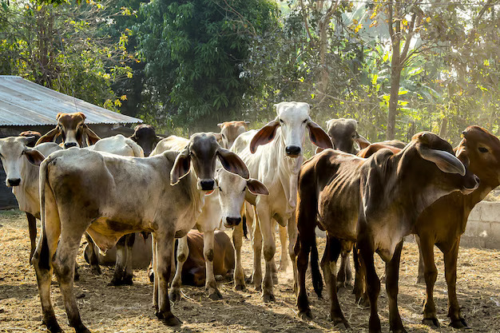

Buy Your Dream Home in Dwarkadhish: Tradition. Sustainability. Together
Highlight the Spiritual and Cultural Value
Incorporating a Gaushala in a residential building can be marketed as a spiritual and cultural oasis for potential buyers. The presence of cows, revered in many cultures, especially in Hinduism, can appeal to individuals seeking a deeper connection to their traditions and spirituality. The Gaushala can symbolize peace, harmony, and purity, offering residents a serene and spiritually enriching environment. This unique feature can attract those who value cultural preservation and religious practices, fostering a sense of belonging and community. Furthermore, organizing events such as festivals, satsangs, or religious gatherings related to the Gaushala can build a strong, supportive community atmosphere that buyers may find appealing.
Conclusion
Incorporating a Gaushala into a residential building offers much more than just a physical space—it creates a unique cultural and spiritual sanctuary that resonates deeply with potential buyers. By offering a peaceful, harmonious environment with the presence of revered animals like cows, the Gaushala becomes a symbol of purity and connection to tradition, appealing to those seeking spiritual fulfillment and a deeper sense of belonging. The integration of cultural and religious practices, along with community-building events such as festivals and satsangs, further strengthens the bond between residents and their environment, creating a vibrant, supportive community. This thoughtful inclusion not only enhances the living experience but also attracts buyers who value tradition, spirituality, and a sense of peace in their everyday lives, making it an exceptional and attractive feature for the modern, conscious buyer.
Contact us
+91 72088 43484 / +91 72088 43487
kkcreateandbiuld@gmail.com
Radha Nilaya, Plot No. 164/2,
Bapane Village, Chandrapada Road,
Naigaon (E) - 401208,
Maharashtra, India.